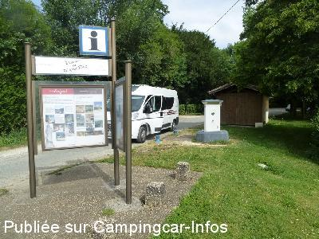
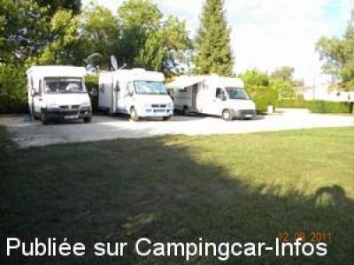

ASN = Aire de services avec stationnement nuit possible de :
SORGES
(N° 679)
Accès/adresse :
N21
Aire de Grangearias
24420 SORGES
Aire de Grangearias
24420 SORGES
Latitude : (Nord) 45.30574° Décimaux ou 45° 18′ 20′′
Longitude : (Est) 0.87268° Décimaux ou 0° 52′ 21′′
Tarif : Gratuit
Type de borne : RACLET
Services :


Tous commerces
Autres informations :
Ouverte toute l'année
4 emplacements
En bordure de la route Thivier Périgueux
Tel : +33(0)553 059 011

Le 03/07/2014 par Papapi AC

Le 18/09/2011 par didier84
de
didier84
le 18/09/2011 :
Nous avons passés la nuit du 12 au 13 Septembre dans un calme total.Les services (gratuits)se trouvent à 100m de l'aire en direction de Périgueux.En face de l'aire se trouve le musée de la truffe.
Nous avons passés la nuit du 12 au 13 Septembre dans un calme total.Les services (gratuits)se trouvent à 100m de l'aire en direction de Périgueux.En face de l'aire se trouve le musée de la truffe.
de
thierry
le 14/04/2009 :
de passage dimanche dernier
superbe petit village
ont peu stationner mini 7 cc bien gérer bien sur
a cote du tennis et au début de l'accès aux stationnement, nuit très calme malgré la nationale proche
musée de la truffe a voir
le tico
de passage dimanche dernier
superbe petit village
ont peu stationner mini 7 cc bien gérer bien sur
a cote du tennis et au début de l'accès aux stationnement, nuit très calme malgré la nationale proche
musée de la truffe a voir
le tico
de
le 11/08/2002 :
Cette aire qui était uniquement à vocation "service" vient de se doter d'une partie stationnement plus en retrait de la circulation.
Cette aire qui était uniquement à vocation "service" vient de se doter d'une partie stationnement plus en retrait de la circulation.